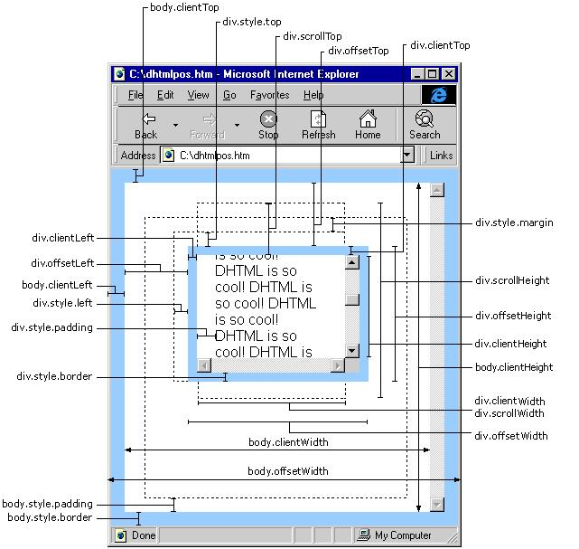

有时候并不能简单的使用CSS来控制页面元素的大小，结合js来控制元素的大小会更方便一些，因此有时就需要用js获取浏览器窗口的尺寸。
方法

纯js
var data = {
"网页可见区域宽(body)" : document.body.clientWidth,
"网页可见区域高(body)" : document.body.clientHeight,
"网页可见区域宽(body)，包括border、margin等" : document.body.offsetWidth,
"网页可见区域高(body)，包括border、margin等" : document.body.offsetHeight,
"网页正文全文宽，包括有滚动条时的未见区域" : document.body.scrollWidth,
"网页正文全文高，包括有滚动条时的未见区域" : document.body.scrollHeight,
"网页被卷去的Top(滚动条) FF" : document.body.scrollTop,
"网页被卷去的Left(滚动条)FF" : document.body.scrollLeft,
"网页被卷去的Top(滚动条) IE" : document.documentElement.scrollTop,
"网页被卷去的Left(滚动条)IE" : document.documentElement.scrollLeft,
"浏览器距离Top" : window.screenTop,
"浏览器距离Left" : window.screenLeft,
"屏幕分辨率的宽" : window.screen.width,
"屏幕分辨率的高" : window.screen.height,
"屏幕可用工作区的宽" : window.screen.availWidth,
"屏幕可用工作区的高" : window.screen.availHeight,
"屏幕颜色位数(位)" : window.screen.colorDepth,
"屏幕像素密度(像素/英寸)IE" : window.screen.deviceXDPI
}
使用jquery
var data = {
"浏览器当前窗口可视区域宽度" : $(window).width(),
"浏览器当前窗口可视区域高度" : $(window).height(),
"浏览器当前窗口文档对象宽度" : $(document).width(),
"浏览器当前窗口文档对象高度" : $(document).height(),
"浏览器当前窗口文档body的宽度" : $(document.body).width(),
"浏览器当前窗口文档body的高度" : $(document.body).height(),
"浏览器当前窗口文档body的总宽度 包括border padding margin" : $(document.body).outerWidth(true),
"浏览器当前窗口文档body的总高度 包括border padding margin" : $(document.body).outerHeight(true)
}
应用
需求
页面结构大体如下：
<!DOCTYPE html>
<html>
<head><meta charset="utf-8"><title>Test</title></head>
<body>
<div class="banner">条幅</div>
<div class="content">内容</div>
<div class="footer">页脚</div>
</body>
</html>
其中条幅定高100px，需要固定在页面顶部；页脚定高80px，需要固定在页面底部。中间的内容高度随具体内容自适应。
当内容部分的文字不够多时示例1，希望页脚能够停靠在浏览器底部示例2。当内容部分的文字足够多时，希望页脚能够处于页面底部，能够随内容滚动示例3。因此，并不能简单的给页脚部分设置bottom值为0。
实现
var clientHeight = $(window).height();
var bannerHeight = 100;
var footerHeight = 80;
var contentHeight = clientHeight - bannerHeight - footerHeight;
$(".content").css("min-height", contentHeight);